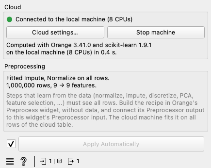

Fits a recipe from Orange's Preprocess widget on all rows of a cloud table, on the machine: normalizing, imputing, discretizing, PCA, feature selection and the rest of Preprocess's steps.

Like every Cloud widget, it has a Cloud box at the top: whether a machine is connected, Cloud settings… and Stop machine, and what the last job ran with, how long it took and what it cost. See Cloud widgets.
Steps that learn their settings from the data (means, cut points, components, ...) must see all rows. Orange's own widgets can't do that on a cloud table, because they see only its placeholder row, so the machine refuses those steps when they come from Orange's Preprocess, Continuize (Normalize) or Impute. Cloud Preprocess fits them on all rows with Orange's own code.
Without a recipe, the data passes through unchanged. Steps recorded after Cloud Preprocess (Select Columns, ...) work on its output as usual.